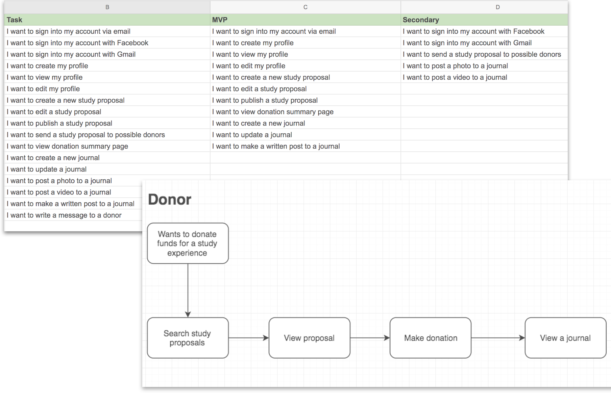
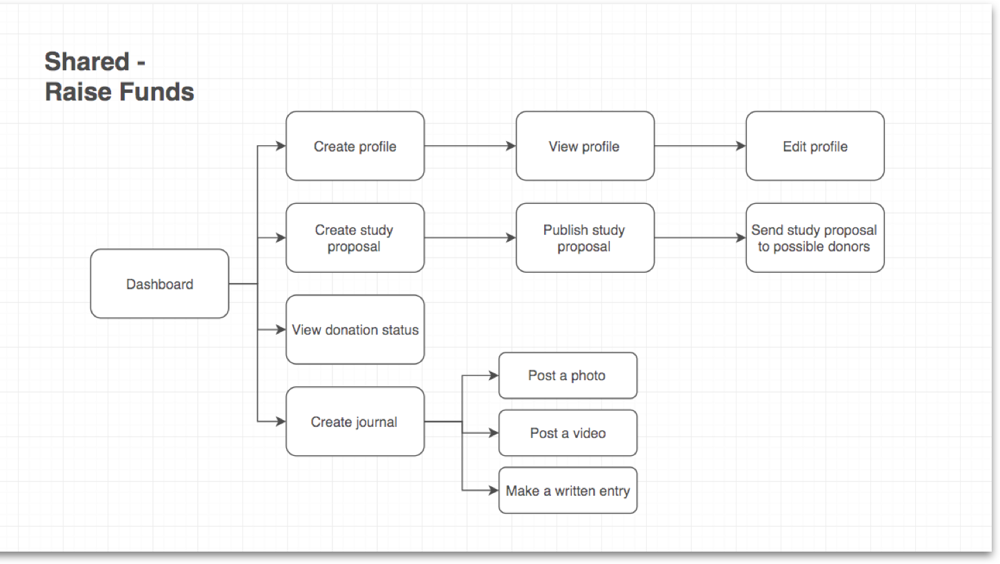
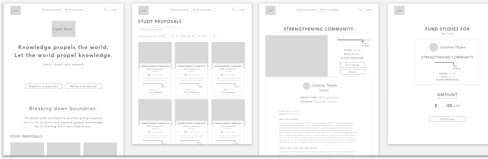
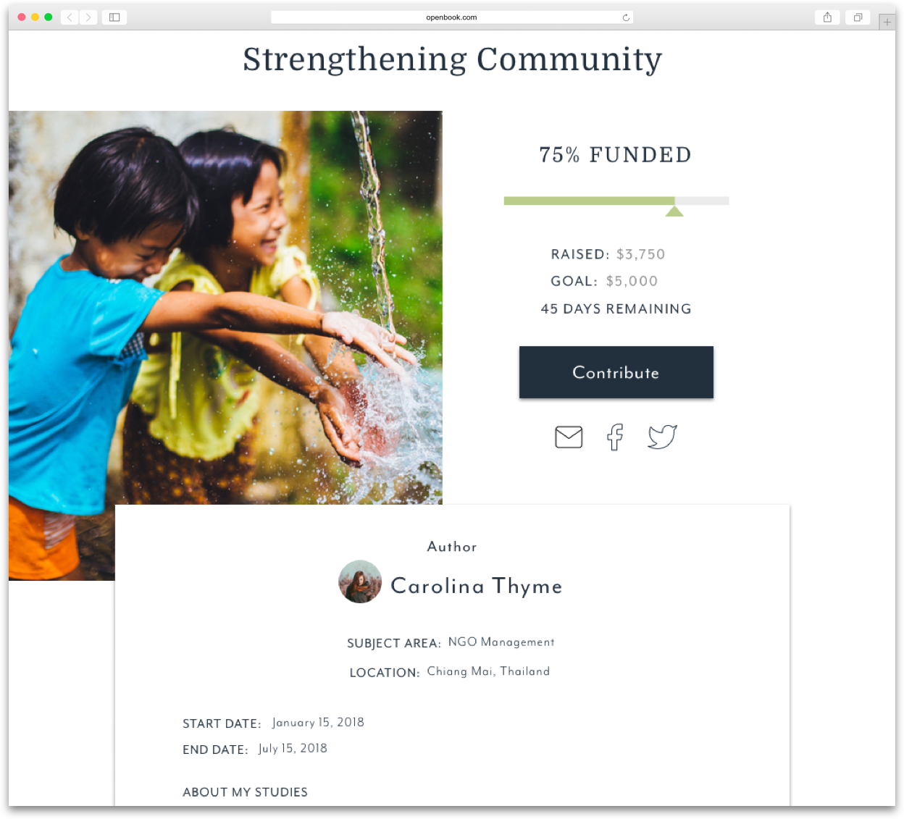
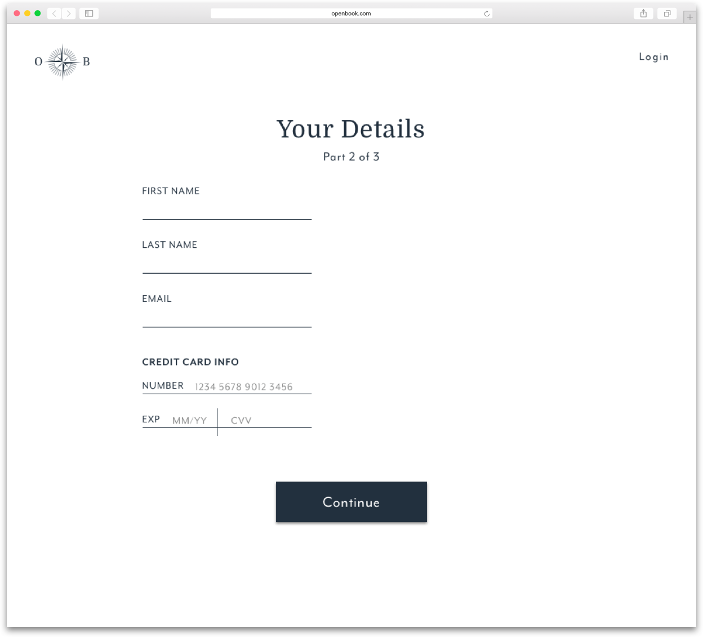
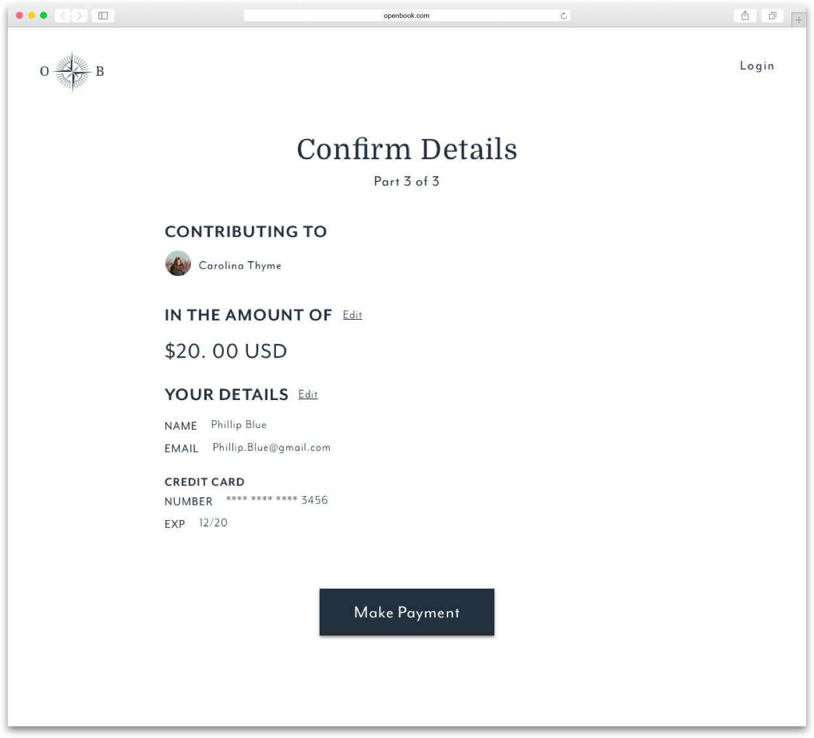
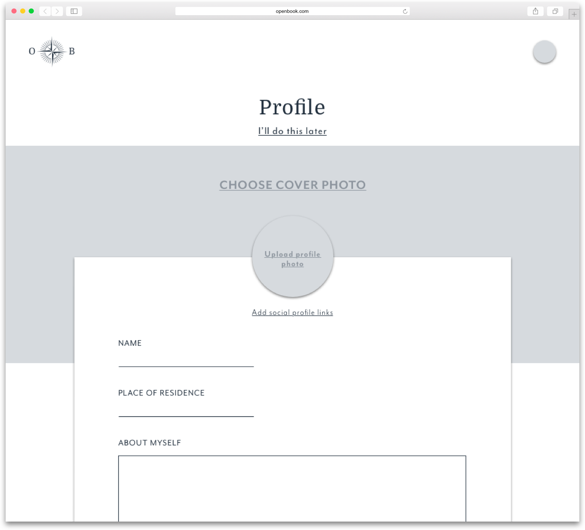
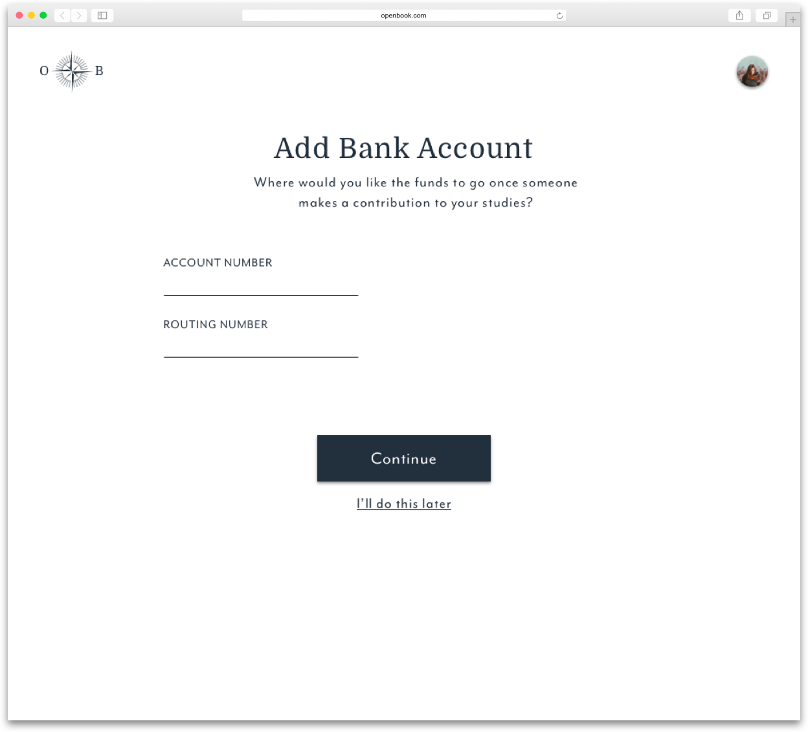

With limited funding options, studying internationally can be difficult. Whether you are a student who wants to study for a semester abroad and have limited finances or perhaps you’re doing research and trying to apply for highly competitive grants. There are also potential students who fall even further out of the scope of what ordinary funding avenues provide, people who have an earnest goal, however, are not planning to study within a program at an accredited institution. Obtaining financial resources is often an impediment to furthering education. By creating a channel for contributions, Open Book provides these students with a practical option to help fund their expansive journeys.
Removing obstacles by offering international students funding avenues to facilitate their journeys.
Survey
It was important to investigate user attitudes towards international study and to ensure Open Book could provide a service in which there was an existing demand for. A detailed user survey was conducted. Fifty-five percent said they would like to study for one year. It was surprising that a considerable amount of respondents would like to study for an extended time. This perhaps indicates they have topics they would like to study more in depth.
55%
Would like to study for one year
Another encouraging statistic was that when asked if they would be more apt to study internationally if they had help raising funds, 55% said yes and 45% said maybe. None of the respondents answered no to this question. There seems to be an eagerness to study in different countries, especially if there could be assistance to raise funds.
When asked:
Would you be more apt to study internationally if you had help raising funds?
55%
answered: Yes
45%
answered: Perhaps
However, 45% said they would not consider donating to someone wishing to study, another 46% said perhaps they would. Only 9% answered yes. When asked why they answered this way, a number of participants felt that they did not have the means to donate. Others said it relied heavily on the individual mission and they wanted to feel confident that it was a worthy cause. This is a definite issue that Open Book would need to address. It would be pertinent for Open Book to offer a way for users to tell their stories and aspirations in a compelling way so that possible contributors would feel confident in their cause.
When asked:
Would you consider donating to someone studying internationally?
46%
answered: No
46%
answered: Perhaps
Overall, by offering facilitation for contributions, there is a great opportunity for Open Book to offer a service in this respect. Also, many had received funding in the past from friends and family, Open Book could make this easier and more convenient for users. It could also offer a way for users to keep people up to date with their studies and experiences while abroad.
The User
After considering all of the findings from the survey and taking a comprehensive look into who will be using Open Book, two main user personas were evident. These users could be differentiated in terms of motivation. There is the user who plans to explore for expansive purposes to make substantial life changes. Secondly, there is the user who plans to study internationally in order to have more in-depth exposure and hopes to advance along their current projected path.
explore — expand
Rachel L.
GOALS
Change career paths
Give back to society
Improve self-knowledge
FRUSTRATIONS
Hasn’t put enough time towards self-improvement
Current job hasn’t been able to give the type of inner-fulfillment she seeks
Hasn’t been able to afford to stop working and study internationally
“I think it is important for students to have these experiences.”
expose — advance
Patrick B.
GOALS
Further education
Expose oneself to a new culture and language
Meet and network with new people
FRUSTRATIONS
Has had trouble finding a well-paying job
Finds MA programs in the USA to be overwhelmingly expensive
Gets bored of the daily grind
“Differentiating oneself is becoming more and more difficult.”
Primary Objectives
At this point, it was necessary to determine users’ main objectives and to start to envision how they would complete these tasks. Therefore, user stories and flows were developed.
CREATING ACCOUNTS
The user stories were broken down between prospective students and contributors. The question arose about whether or not to include donor accounts. Requiring users to create an account to contribute funds seemed unnecessary and a probable hindrance. Potential benefits of contributor accounts would include the possibility to have a saved list of study proposals they are considering contributing to. It would also make it possible to have a messaging system within Open Book. In the end, contributor accounts are not included in the initial version in order to focus on the most essential functions. However, this is something that will be considered for an upcoming release.

GIVING BACK TO CONTRIBUTORS
It was important to create a way for students who receive contributions to give something in return. Because Open Book emphasizes expansion and learning, it seemed fitting to give students a way to offer their knowledge and experiences. This was the inspiration for having student journals within the application. A journal is created simultaneously once a study proposal is published and is there immediately for students to make entries. Also, because journals can only be accessed by those who have donated funds, journals work as an added incentive for contributors.

Building the Structure
With the essential purposes established, low fidelity wireframes were composed. By creating the wireframes in Sketch it was possible to get a real sense of how the final product would look, but still enabled the major direction to take visual form relatively quickly.

While developing the high fidelity designs a number of elements organically evolved that did not seem evident in the wireframes. For example, in the wireframes, the personal pages were represented as folders. After including a cover photo in the profile page of the high fidelity comps, it seemed fitting to use the photo instead of the folders in the personal pages because it added dimension and an artistic element.
Creating the Atmosphere
The main themes of Open Book include exploration, expansion, connection, and intellectual pursuits. Therefore, it was important to find an aesthetic that would compliment these ideas. To emphasize content, a sophisticated, minimalist approach was chosen.
When developing the logo mark two ideas emerged. The first was the compass, which represents the world and expansion. It is connected to learning through exploration. It is a symbol of going beyond the horizon and open possibilities. The second was a symbol representing fanned books. A clear representation of intellectual learning, and by forming a circle it illustrates an ongoing cycle and connection. Connection is very important to the Open Book core principles because it emphasizes a cycle of giving and receiving. The final logo combines these two ideas to embody expansive learning, exploration, and the cycle of generosity.
It was important to choose typefaces that were sophisticated but still had personality. Domine exhibited this balance and is used for primary headlines. Mr Eaves Mod OT was chosen as a compliment. The sans serif has a refined sensibility and it’s lower x-height gives it originality.
The deep navy blue is meant to be reminiscent of ink and the stark white was chosen to create contrast and keep with the minimalistic theme. An accent green tone was chosen because it lent visual variety yet was still relevant to the sophisticated palette.
Finishing Touches
The prototyping stage served as a helpful test-ground to see how Open Book would operate. Users responded well to the overall aesthetic of the site. While viewing the homepage, one respondent expressed that they liked how it was, “light and inviting.” Other user comments were taken into consideration for future releases, such as adding Paypal as a payment option.
Having a well-thought-out process throughout development meant many issues were resolved in earlier stages, however a number of small adjustments were made to further clarify components. For instance, an additional link to “learn more about journals” was added to the homepage in order to give users optimal opportunities to learn about this key feature of the application.
Prototype
HOMEPAGE
The homepage introduces the fundraising service Open Book provides to both types of users, students and contributors. It also shows different study proposals they can make contributions towards.
CONTRIBUTOR FLOW
A simple, straightforward method for users to make contributions to individual students who are planning to study internationally.



PROPOSAL FLOW
This uncomplicated step-by-step process enables students to create compelling proposals to help fund their upcoming studies.


JOURNAL FLOW
By creating journal entries, students are able to give back to contributors by sharing their experiences and knowledge they are gaining from their studies.